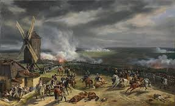

From today's featured article
The Naval Battle of Lagos took place between a British fleet commanded by Sir Edward Boscawen and
a French fleet under Jean-Francois de La Clue-
Sabram over 18-19 August 1759 during
the Seven Years' War.
The French Mediterranean Fleet successfully passed through the Strait of Gibraltar, but
was sighted by a British ship.
The British fleet in Gibraltar was undergoing a major refit and left port amidst gret
confusion, with many ships delayed
and sailing in a second squadrom. Aware that be was pursued, La Clue changed couse, but half of his
ships failed to follow him in the dark. The British
caught the French outh west of the Gulf of cadir, fierce fighting ensured, and ease
French ship was captured. The British pursued
the remaining six
French ships on overnight and two managed to escape. The four survivors attempted
to shelter in neutral
Portuguese waters near Lagos, but Boscauren
violated that neutrally , capturing two
of the ships and destroying the other two.
(Full article..)
Recently featured:
- Illustrated Daily News
- 2019 World Snooker Championship
- Surrender of Japan
- Archieve
- By emails
- More featured articles
Did you know ...

- Ronnie O'Sullivan(pictured) wins the Worlds
Snooker Championship defeating Kyren
Wilson in the final. - Ugaedan Joshua Cheptegeisets a new world
recordin the men's 5000 meters. - Israel and the United Arab Emirates agree to
establish diplomatic relations. - Pro-democracy protests intensify in Belarus
after the contested reflection of incumbent
President Alexander Lukashenko.
Recent Deaths:
- Jasraj
- Murtaja Baseer
- Robert Trump
- Linda Manz
- Julian Bream
- Luchita Hurtadio
- Other recent events
- Nominate an article
On this day:
August 18 Long Tan Day, in Australia (1996)